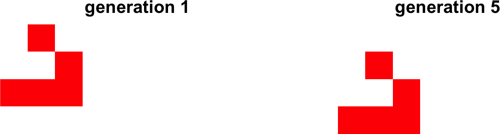
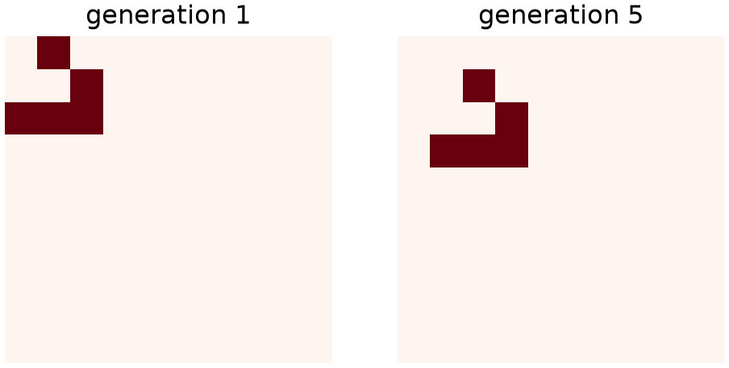
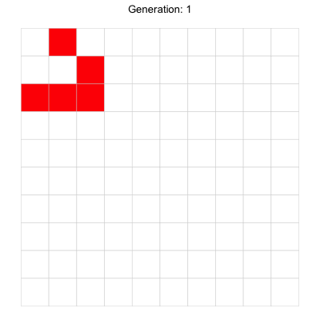

# classify each number in a list as even or odd
numbers <- c(4, 7, 10, 13)
classify <- function(x) {
if (x %% 2 == 0) "even" else "odd"
}
for (n in numbers) {
cat(n, "is", classify(n), "\n")
}4 is even
7 is odd
10 is even
13 is odd This book illustrates numerical methods in systems biology using R and Python side by side, with Quarto rendering both into one document and VS Code as the editor.
To set up your environment, install, in this order:
R, from CRAN.
Python (3.x), from python.org or your system’s package manager.
Quarto, from quarto.org/docs/get-started.
VS Code, from code.visualstudio.com, then add three extensions from the Extensions panel: R (by REditorSupport), Python (by Microsoft), and Quarto.
Claude Code, a command-line AI assistant that reads, edits, and runs code inside your own project rather than a generic chat window. Install it with
npm install -g @anthropic-ai/claude-codewhich requires Node.js. Anthropic also publishes a VS Code extension for it, so a Claude Code panel can sit next to your editor; check Anthropic’s current documentation for the exact setup, since install methods change over time.
Once these are installed, open a project folder in VS Code and run claude from the integrated terminal to start a session there. The rest of this chapter is about what to do with that session once it’s open.
An AI assistant can now turn a short description into a working script, so producing code is no longer the hard part of programming. What an assistant cannot do reliably is tell you whether the result is correct or not. That gap matters most in numerical work, where a wrong method rarely crashes. For example, a wrong code may still return a number or plot a curve without displaying error. The skills worth building are the ones the AI assistant may lack, which is understanding a method well enough to know what it should produce, and checking that it did.
This is where the code in this book earns its place. Every method was developed manually before the AI era, and every implementation has been checked against a known answer. Thus, the code in this book creates a reliable reference, while code that an AI assistant generates is only plausible until you prove otherwise. You could use the provided code four ways: (1) as a worked example to read, (2) as a target to rebuild, (3) as the reference to check your own or an AI-generated version against, and (4) as a starting point to modify once you want to go beyond the presented methods.
A good way to work through each method is:
To make this concrete, each worked method in this book is framed as a recipe, a short box with six fields: Objective (what the code should accomplish), Model (the governing equations and kinetics, stated fully enough to reproduce the system), Method (the numerical approach), Test (a concrete case to run, with every parameter, input, and initial condition), Show (the output to produce, such as a plot or printed values), and Verification (how to tell the result is correct). The Model and Test fields are what make a recipe self-contained to allow generation of reproducible results. In mathematical modeling, the equations plus the parameters are mostly sufficient to rebuild the system without seeing the code. In some cases, the Model field is omitted because the method is not tied to any governing equations.
Recipe boxes appear for the major methods and applications, not for every code block. Each was first drafted by an AI assistant (Claude Opus 4.8) and then checked and corrected by hand. The Recipe boxes serve as the summary of the method and working in plain words (and equations/parameters when applicable). Every box is collected in the recipe index.
A recipe also converts into a structured prompt, which is how you get help on the parts you cannot yet write without giving up the understanding. Instead of a vague request, you fill a fixed template with the recipe’s fields:
In [R or Python], [Objective]. The model is [Model]. Use [Method]. Test it on [Test]. Produce [Show], and as a separate check, confirm that [Verification]. Implement the method explicitly with short comments rather than calling a routine that does it in one step, and explain in a sentence why that check confirms the result.
Write it in plain text, typing any equation the way you would in an email; an assistant reads dX/dt = g - kX as readily as the typeset form. The prompt also specifies the outputs to produce and the checks to run, so the generated code can be verified against the known answer. In the HTML edition, each recipe box carries a Copy prompt button that fills this template from the box for you. Whatever the assistant returns, run the verification yourself before you trust it. In a sense, you could consider the structured prompt as the “pseudo-code” of the method in the era of AI.
Finally, you could also ask the AI assistant about code that already exists. Name the actual code and the actual confusion: paste the function, then ask what a specific operator, argument, or line does and why. A vague request such as “explain this file” returns a vague answer. Verify the explanation the same way you verify code: change an input, predict the result, run it, and compare. Checking like that would help greately to avoid hallucination, one of the most common failure modes of AI assistants.
Here is the smallest script that still has something worth asking about: a comment, a variable, a function, and a loop with a condition inside it. Here is its recipe:
Objective. Label each number in a list as “even” or “odd”.
Method. Loop over the numbers, test each with the modulo (remainder) operator, and print its label.
Test. The list 4, 7, 10, 13.
Show. The printed even/odd label for each number in the list.
Verification. 4 and 10 print as even; 7 and 13 print as odd.
Try the recipe first: the Copy prompt button on the box turns it into a prompt you can hand to an assistant, then compare what comes back with the version below.
# classify each number in a list as even or odd
numbers <- c(4, 7, 10, 13)
classify <- function(x) {
if (x %% 2 == 0) "even" else "odd"
}
for (n in numbers) {
cat(n, "is", classify(n), "\n")
}4 is even
7 is odd
10 is even
13 is odd # classify each number in a list as even or odd
numbers = [4, 7, 10, 13]
def classify(x):
return "even" if x % 2 == 0 else "odd"
for n in numbers:
print(n, "is", classify(n))4 is even
7 is odd
10 is even
13 is oddTo run this yourself, create a new file classify.R (or classify.py) in VS Code, paste in the code above, and use the Run button the R or Python extension adds to the editor, or run Rscript classify.R / python3 classify.py from the integrated terminal.
Then open a Claude Code session in the same folder: split the editor so the file you are reading stays visible on one side while Claude Code runs on the other, rather than switching back and forth between two overlapping windows.
| 01a-getting-started.qmd | TERMINAL - claude |
|---|---|
## 1A.3 A minimal example
numbers <- c(4, 7, 10, 13)
classify <- function(x) {
if (x %% 2 == 0) "even" else "odd"
}
for (n in numbers) {
cat(n, "is", classify(n), "\n")
}
|
> Explain the classify function > below, line by line. In R, a function returns the value of the last expression it evaluates, and an if/else block is itself an expression... |
Ask about the one part that is not obvious on a first read: the inline if (...) "even" else "odd" in R, or the equivalent conditional expression in Python. A session might go like this:
> What does `if (x %% 2 == 0) "even" else "odd"` return, and why is there no
> explicit `return`?
In R, a function returns the value of the last expression it evaluates, and
an if/else block is itself an expression: it evaluates to whichever branch
ran. So this line evaluates to the string "even" or "odd", and because it is
the only expression in `classify`, that string becomes the function's return
value. `%%` is R's modulo operator, so `x %% 2 == 0` is TRUE exactly when x
is even.Verify it: call classify(11) and confirm you get "odd", then try classify(0) and check the answer still makes sense.
The R and Python versions do the same thing with different spellings, and that contrast is worth asking about too. Paste both blocks and ask the assistant to list the differences line by line. A good answer points out that R builds the list with c(...) while Python uses [...]; R’s remainder operator is %% and Python’s is %; R returns the value of its last expression, the bare if/else, whereas Python needs an explicit return with the conditional expression A if cond else B; and R prints with cat, Python with print. Seeing one idea in two spellings is the fastest way to stop treating either language’s punctuation as magic.
A few other ways to use an assistant on a script you are reading:
== 0 with == 1, then check the prediction by editing and re-running.Each of these keeps you doing the thinking and uses the assistant to check it, which is the habit the rest of the book is built around.
This book teaches R and Python by using them rather than through a full language course. For a proper grounding, these are good starting points.
For R:
For Python:
Below are two features new readers most often stumble on, each shown in both languages: forwarding arguments with an ellipsis, and the difference between a matrix and a data frame. When a later chapter’s code looks unfamiliar, that is the moment to paste it into an assistant and ask.
Ellipsis and **kwargs. R’s ... and Python’s **kwargs let a function forward whatever arguments it received on to another function whose full signature it does not need to know. This pattern shows up in nearly every integrator in this book, starting with Euler() in Part 2B.
# a function whose second argument is itself a function, forwarded extra
# arguments via ...
func_main <- function(a, func_2nd, ...) {
return(a + func_2nd(...))
}
func1 <- function(d, e) d + e
func_main(a = 1, func_2nd = func1, d = 2.4, e = 0.6)[1] 4# a function whose second argument is itself a function, forwarded extra
# arguments via **kwargs
def func_main(a, func_2nd, **kwargs):
return a + func_2nd(**kwargs)
def func1(d, e):
return d + e
func_main(a=1, func_2nd=func1, d=2.4, e=0.6)4.0Paste func_main into Claude Code and ask “what does .../**kwargs do here, and why does func1 need to accept exactly d and e?” A good answer explains that the ellipsis collects any named arguments beyond a and func_2nd, then re-expands them at func_2nd(...). If func1’s parameter names do not match what was forwarded, the call fails. Verify it: rename func1’s parameters to f and g without changing the call, and confirm you get an error, since neither d nor e is among func1’s parameter names anymore.
Matrix vs. data frame. A matrix holds elements of a single type and supports linear algebra directly; a data frame allows a different type per column and is what most statistics and plotting functions expect. Confusing the two is a common source of trouble, and both languages draw the same distinction. In R, matrix() builds the first and data.frame() the second.
# a matrix holds one type and does linear algebra
m <- matrix(c(1, 2, 3, 4), nrow = 2)
m %*% m # matrix multiplication [,1] [,2]
[1,] 7 15
[2,] 10 22# a data frame holds a column per variable, each with its own type
df <- data.frame(atom = c("N", "CA", "C", "O"), # character column
mass = c(14, 12, 12, 16)) # numeric column
str(df) # each column keeps its own type'data.frame': 4 obs. of 2 variables:
$ atom: chr "N" "CA" "C" "O"
$ mass: num 14 12 12 16Python draws the same line between a NumPy array (one type, for linear algebra) and a pandas data frame (a column per variable, mixed types).
import numpy as np
import pandas as pd
# a NumPy array holds one type and does linear algebra
m = np.array([[1, 2], [3, 4]])
print(m @ m) # matrix multiplication[[ 7 10]
[15 22]]# a pandas DataFrame holds a column per variable, each with its own type
df = pd.DataFrame({"atom": ["N", "CA", "C", "O"], # string column
"mass": [14, 12, 12, 16]}) # numeric column
print(df.dtypes) # each column keeps its own typeatom str
mass int64
dtype: objectAsk the assistant why a matrix cannot hold a text column alongside numbers, and when you would reach for each. Verify it: try to place a string into the numeric matrix (matrix(c(1, "a", 3, 4), 2) in R, np.array([1, "a", 3, 4]) in Python) and watch every element turn into text, since a matrix or array must share one type.
Conway’s Game of Life is a grid of cells, each alive or dead, updated together at every step by three rules applied to each cell’s eight neighbors (Gardner 1970):
Objective. Simulate Conway’s Game of Life and follow a glider across the grid.
Model. A grid of cells, each alive (1) or dead (0), updated synchronously by three rules applied to each cell’s eight neighbors: a live cell with 2 or 3 live neighbors survives; a dead cell with exactly 3 live neighbors becomes alive; every other cell is dead next generation. The grid edges wrap around (a periodic boundary), so it is a torus.
Method. Count each cell’s live neighbors with wraparound, then apply the three rules to all cells at once.
Test. A 10x10 grid seeded with a glider at cells (1,2), (2,3), (3,1), (3,2), (3,3); run for several generations.
Show. The grid at several successive generations, with the glider visible.
Verification. The glider keeps its five-cell shape and drifts one step diagonally every four generations; on reaching an edge it reappears on the opposite side.
n <- 10
grid <- matrix(0, n, n)
# a glider: a five-cell pattern that translates diagonally without changing shape
glider <- rbind(c(1, 2), c(2, 3), c(3, 1), c(3, 2), c(3, 3))
for (i in seq_len(nrow(glider))) grid[glider[i, 1], glider[i, 2]] <- 1
# count each cell's eight live neighbors, with wraparound (periodic) edges
neighbor_sum <- function(g) {
n <- nrow(g)
idx_r <- row(g); idx_c <- col(g)
total <- matrix(0, n, n)
for (di in -1:1) for (dj in -1:1) {
if (di == 0 && dj == 0) next
r <- ((idx_r - 1 + di) %% n) + 1
cc <- ((idx_c - 1 + dj) %% n) + 1
total <- total + matrix(g[cbind(as.vector(r), as.vector(cc))], n, n)
}
total
}
# one generation: apply the three rules to every cell at once
step <- function(g) {
nb <- neighbor_sum(g)
((nb == 3) | (g == 1 & nb == 2)) * 1
}
# run four generations (one full glider cycle) and show the start and end
g_end <- grid
for (t in 1:4) g_end <- step(g_end)
par(mfrow = c(1, 2), mar = c(1, 1, 2, 1), pty = "s")
image(1:n, 1:n, t(grid[n:1, ]), col = c("white", "red"), axes = FALSE,
xlab = "", ylab = "", main = "generation 1")
image(1:n, 1:n, t(g_end[n:1, ]), col = c("white", "red"), axes = FALSE,
xlab = "", ylab = "", main = "generation 5")
import numpy as np
import matplotlib.pyplot as plt
n = 10
grid = np.zeros((n, n), dtype=int)
# a glider: a five-cell pattern that translates diagonally without changing shape
glider = [(0, 1), (1, 2), (2, 0), (2, 1), (2, 2)]
for i, j in glider:
grid[i, j] = 1
# count each cell's eight live neighbors, with wraparound (periodic) edges
def neighbor_sum(g):
total = np.zeros_like(g)
for di in (-1, 0, 1):
for dj in (-1, 0, 1):
if di == 0 and dj == 0:
continue
total += np.roll(np.roll(g, di, axis=0), dj, axis=1) # roll wraps around
return total
# one generation: apply the three rules to every cell at once
def step(g):
nb = neighbor_sum(g)
return ((nb == 3) | ((g == 1) & (nb == 2))).astype(int)
# run four generations (one full glider cycle) and show the start and end
g_end = grid.copy()
for _ in range(4):
g_end = step(g_end)
fig, ax = plt.subplots(1, 2, figsize=(6, 3))
# assign each call to _ so its matplotlib return object is not echoed as output
for a, g, title in zip(ax, [grid, g_end], ["generation 1", "generation 5"]):
_ = a.imshow(g, cmap="Reds", vmin=0, vmax=1)
_ = a.set_title(title)
_ = a.axis("off")
plt.show()
The two snapshots show the glider one full cycle later: the same five-cell shape, shifted one step diagonally. A pair of frames only hints at the motion, so for a clearer view we render the whole run as an animation. The code below (R’s gganimate here) is shown as a listing you can run; the resulting GIF is pre-generated and embedded, so the book does not rebuild it on every render.
library(ggplot2); library(gganimate); library(gifski)
n_gen <- 40
frames <- vector("list", n_gen)
g <- grid
for (t in seq_len(n_gen)) {
frames[[t]] <- data.frame(row = as.vector(row(g)), col = as.vector(col(g)),
state = as.vector(g), generation = t)
g <- step(g)
}
df <- do.call(rbind, frames)
df$state <- factor(df$state, levels = c(0, 1))
p <- ggplot(df, aes(x = col, y = row, fill = state)) +
geom_tile(color = "grey80") +
scale_fill_manual(values = c("0" = "white", "1" = "red"), guide = "none") +
scale_y_reverse() + coord_fixed() +
labs(title = "Generation: {current_frame}", x = NULL, y = NULL) +
theme_void() + theme(plot.title = element_text(hjust = 0.5))
anim <- animate(p + transition_manual(generation), fps = 5, nframes = n_gen,
width = 400, height = 400, renderer = gifski_renderer())
anim_save("game-of-life.gif", animation = anim)
Watch the animation closely around generation 35 to 40: part of the glider appears to jump to the opposite side of the grid rather than sliding off it. The neighbor_sum function above never says anything about what happens at the edges of the 10x10 grid, so paste it into Claude Code and ask directly:
> What is `((idx_r - 1 + di) %% n) + 1` doing, and why does the glider
> reappear on the opposite edge instead of just disappearing off the grid?
The %% (modulo) here wraps an index back into the range 1..n whenever di or
dj would push it past an edge: a neighbor "above row 1" becomes row n, and a
neighbor "past column n" becomes column 1. That makes the grid a torus
rather than a flat sheet with edges, so a cell near row 1 is a genuine
neighbor of a cell in row n. This is called a periodic boundary condition:
instead of an edge where nothing happens or a wall, the far edge of the grid
is treated as touching the near edge. That is exactly why the glider
reappears on the opposite side rather than vanishing.Verify it: pick a cell in the top row and compute ((0 - 1 + -1) %% 10) + 1 by hand to confirm it does map to row 10, not to a negative or out-of-range index.
Periodic boundaries are not just a trick for a small grid of cells. Part 5C applies the same idea to a continuous-space molecular dynamics simulation: a particle leaving one side of a simulation box re-enters from the opposite side, using a function (bc_periodic) built on the same wraparound rule shown here.
Compare the two neighbor_sum functions above: the R version wraps indices with the modulo operator (%%), while the Python version shifts the whole grid with np.roll. Ask the assistant why both produce the same periodic boundary. Then pick any function you have not read closely, this one or a later chapter’s ODE integrator, paste one version into Claude Code, ask one specific question about the part you do not understand, and check the answer by changing an input and predicting the output before you run it.